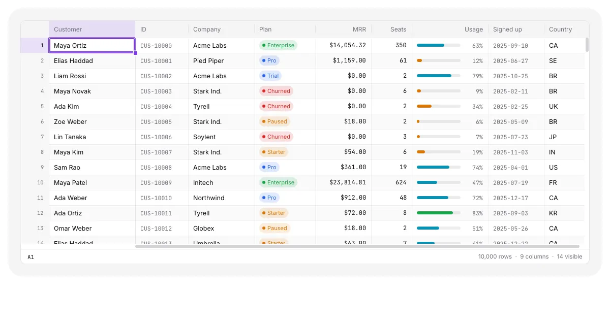

Data Grid
A virtualized spreadsheet with 10,000 rows: frozen header, row numbers and first column, drag-select ranges, type to edit, Enter / Tab navigation, resize columns, TSV copy / paste and a live sum.

Usage
Add glowkit next to eframe:
cargo add glowkit eframeThen draw it inside any egui Ui:
use glowkit::prelude::*;
use glowkit::canvas::{GridData, GridColumn, CellKind, DataGrid, GridState};
let mut data = GridData {
columns: vec![
GridColumn::new("Customer", 180.0, CellKind::Text),
GridColumn::new("MRR", 110.0, CellKind::Currency),
GridColumn::new("Usage", 140.0, CellKind::Percent),
],
rows, // Vec<Vec<String>>
};
DataGrid::new(&mut data, &mut state).height(480.0).frozen_columns(1).show(ui);Prefer to own the code? The glowkit CLI copies this component's source into your project, shadcn-style:
cargo install glowkit-cli
glowkit add data-gridEquivalent to
If you know this pattern from Kibo UI and TanStack Table, Data Grid is the Rust version: an original egui implementation, not a port, that runs natively and in WebAssembly.
- Glide Data Grid
- AG Grid
- TableKibo UI
- VirtualizedTanStack Table
- Excel / Google Sheets grid
About Data Grid
Data Grid is one of 13 components in glowkit's Canvas & Editors category. It lives in the glowkit-canvas crate, enabled by the canvas feature of glowkit (on by default). It reads its colors from the active glowkit theme, so it matches the rest of your app in light, dark or a custom brand theme, and every color, size and timing has a setter to override it.
The heavy pieces of creative and developer tools: a React-Flow-style node editor, shader graphs, flowcharts, an infinite canvas and whiteboard, kanban and gantt boards, mind maps, a timeline editor, a data grid, org charts and a signature pad.